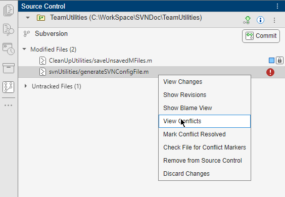
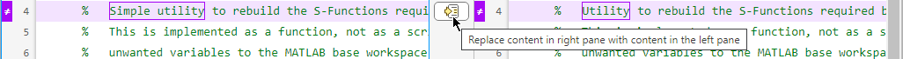
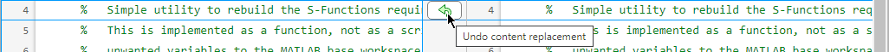
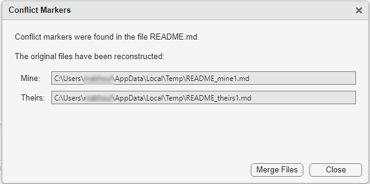

Resolve SVN Source Control Conflicts
If you and another user change the same file in different SVN working folders, updating the working folder before you commit your changes might result in conflicts.
To resolve conflicts, you can:
Use the Comparison Tool to merge changes between revisions. For more information, see Resolve Conflicts.
Make changes manually by editing the files in the Editor or by overwriting files. If you do not use the Comparison Tool to resolve conflicts, you must mark the conflicted file resolved before you commit your changes. In the Source Control panel, right-click the file and select Mark Conflict Resolved.
Resolve Conflicts
To resolve conflicts in files, follow these steps.
Identify conflicted files by looking for a red warning symbol in the list of modified files in the Source Control panel. If the Source Control icon is not in the sidebar, click the Open more panels button
 and select the Source Control
panel.
and select the Source Control
panel.The conflict warning icon also appears in the source control column in the Files and the Project panels.

To examine the details of a conflict, right-click the conflicted file and select View Conflicts. For text-based files, the Two-Way Merge Tool opens. For model files the Three-Way Merge Tool opens.
To fix a conflict, you can keep one of the changes or combine both before you save the merged file. See Merge Text Files and Model Comparison (Simulink).
To commit the modified files, click Commit.
Merge Text Files
When you compare text files, you can merge changes from one file to the other. Merging changes is useful when resolving conflicts between different versions of files.
If you see conflict markers <<<<<<< .mine
in a text comparison report, extract the conflict markers before you merge.
For more information, see Extract Conflict Markers.
You can merge files only from left to right. When comparing to another version in
source control, the file on the right is the local version. The file on the left is
either a temporary copy of the previous version or another version causing a
conflict (for example., filename_theirs). Observe the file paths of both files at
the top of the comparison report. Follow these steps to merge the differences from
the file on the left (temporary copy) to the file on the right to resolve a
conflict.
In the Comparison Tool report, select a difference in the report and click Replace Content. The difference is copied from the left file to the right file.
To undo the content replacement, click Undo.
Alternatively, use the inline Replace Content and Undo icons.


The merged file name at the top of the report displays the dirty flag (
filename.m*Click Accept & Close to save the merge changes and mark the conflicts resolved.
Extract Conflict Markers
Source control tools can insert conflict markers in files that you have not registered as binary, such as SLX and MLX files. You can use MATLAB® to extract the conflict markers and compare the files causing the conflict. This process helps you to decide how to resolve the conflict.
Conflict markers have this form.
<<<<<<<["mine" file descriptor] ["mine" file content] ======= ["theirs" file content] <<<<<<<["theirs" file descriptor]
Caution
Register files with source control tools to prevent them from inserting conflict markers and corrupting files. For more information, see Register Binary Files with SVN. If your files already contains conflict markers, the MATLAB tools can help you resolve the conflicts.
Files not marked as conflicted can still contain conflict markers. Conflict markers might be present if you or another user marked a conflict resolved without removing the conflict markers and then committed the file. If you see conflict markers in a file that is not marked conflicted, follow these steps to extract the conflict markers.
In the Files or Project panel, right-click a file and select Source Control > Check File for Conflict Markers.

MATLAB reconstructs the content of the original files before the merge and displays the paths in the Mine and Theirs fields.
Click Merge Files to open the Merge Tool and resolve conflicts. See Resolve Conflicts.